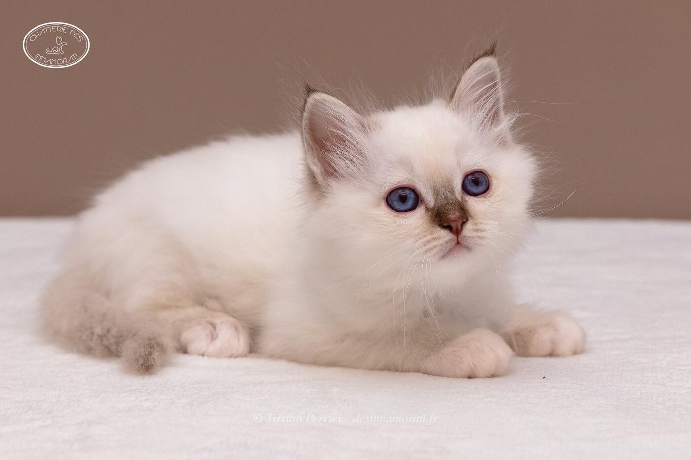

RobeMâle · Chocolat tabby point
Naissance7 octobre 2018
StatutAdopté
Album17 photos, de décembre 2018 à novembre 2026
Frères et sœursObade des Innamorati, Olympe des Innamorati, Ops des Innamorati, Œdipe des Innamorati
Demi-frères et sœurspar sa mère : 2017 avec Jacaranda Maître Mão
par son père : 2019 avec Crowned Dream Lizz, 2019 avec Norma Jean, 2019 avec Odyssée du Castel Walou, 2019 avec Crowned Dream Kacey
par son père : 2019 avec Crowned Dream Lizz, 2019 avec Norma Jean, 2019 avec Odyssée du Castel Walou, 2019 avec Crowned Dream Kacey


Photos réduites et marquées. Elles appartiennent à la Chatterie des Innamorati et ne peuvent pas être reprises dans une annonce.